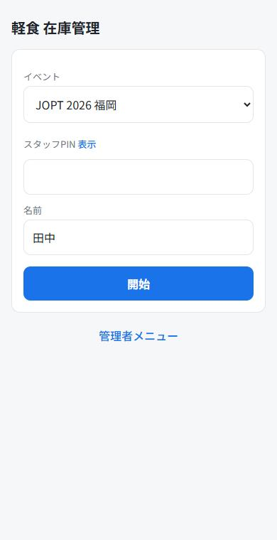
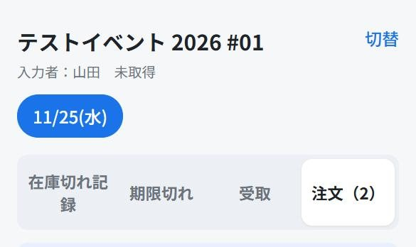
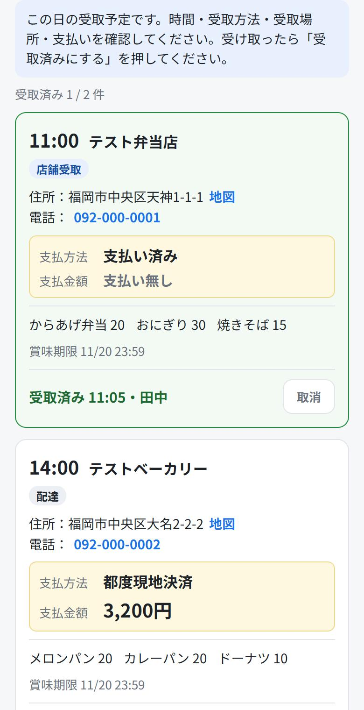
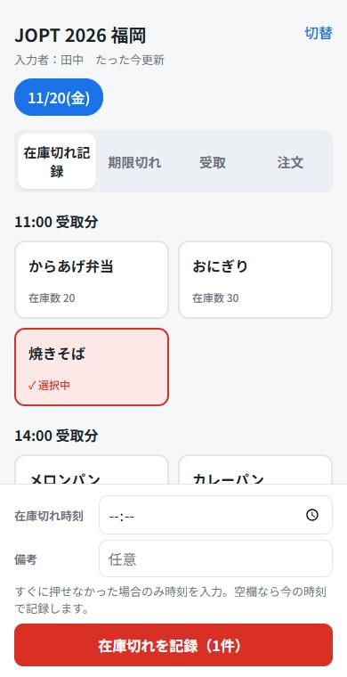
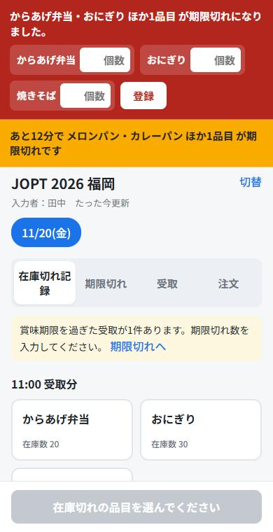
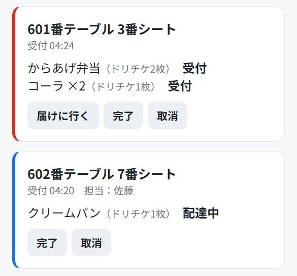
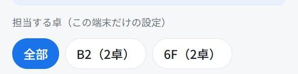
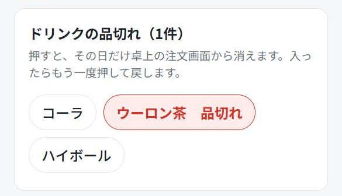

やりたいことから引く。上の並びから選んでも、順に読んでもいい。画像はすべて実際の画面（中身はテスト用の作り物）。
①品物を受け取ったら押す ②売り切れたら押す ③賞味期限の赤い帯に数を入れる。これだけ。あとは注文が来たら届ける。迷ったら社員に聞いていい。

お客様に画面を見せない。もしPINを人に見られたら社員に言う。
上に4つのタブが並んでいる。やることで押し分ける。

| タブ | いつ押すか |
|---|---|
| 受取 | お店から品物を受け取ったとき |
| 在庫切れ記録 | 品物が売り切れたとき |
| 期限切れ | 賞味期限が来て、余った数を入れるとき |
| 注文 | 卓から注文が入ったとき |
画面のいちばん上に黄色や赤の帯が出ることがある。これは賞味期限のお知らせで、消すことはできない。「賞味期限が近づいたときは」を見る。

「請求書払い」なら受け取るだけ。金額が書いてあったらその場で払う。「支払い無し」と薄く出ていれば払わなくていい。分からなければ払う前に社員に聞く。
押し間違えたら「取消」で戻せる。受取を押しても在庫は変わらない。受け取ったかどうかの記録だけ。

押した時刻がそのまま記録になる。あとでまとめて押すと時刻がずれて、次回の発注数がくるう。
忙しくてすぐ押せなかったときは、下の時刻の欄に実際に売り切れた時刻を入れてから押す。理由があれば備考に書く。
画面のいちばん上に帯が出る。帯は閉じられない。やることをやると自然に消える。
→ 黄色。まだ何もしなくていい。売れそうなら声をかける。
→ 赤。残った数を入れる。

鈴の音が鳴る。数を入れるまで鳴り続けるわけではないので、音が止まっても帯が残っていたら必ず入れる。期限が切れた品物は出さない。
卓から注文が入ると鈴の音が鳴り、「注文」タブに数が出る。

注文が入っても在庫の数は変わらない。売り切れたら別に「在庫切れ記録」で押す。この2つは別の作業。
フロアが分かれている会場では、自分の担当ぶんだけに絞れる。音も担当ぶんだけ鳴る。

「注文」タブの上のほうにドリンクのボタンが並んでいる。

間違えて押しても、もう一度押せばすぐ戻る。その日のそのイベントだけで、翌日には戻っている。
そのまま押していい。押した内容は端末に残り、電波が戻ったときに自動で送られる。
反応が無くても連打しない。二重に記録されないようになっているが、待つのがいちばん早い。
そのまま閉じていい。次に開いたときも同じイベントのまま使える。
数を入れて「登録」を押していない。または、入れた品目がまだ残っている。帯に出ている品目を全部入れると消える。
スマホがマナーモードか、画面を一度も触っていない。画面をどこか一度タップすると鳴るようになる。音量も上げる。
担当する卓で絞られている。「全部見る」を押すか、「全部」のボタンを押す。
もう在庫切れにしてあるか、まだ受取時間になっていない。「期限切れ」タブには在庫切れの品目は出ない。
同じカードの「取消」を押す。何度でも押し直せる。
同じ品目をもう一度開くと「取り消す」が出る。取り消すと記録した時刻も消える。
もう一度押せば戻る。確認は出ない。
同じ欄に正しい数を入れて、もう一度「登録」。あとから入れ直した数で上書きされる。
PINが違うか、イベントが選べていない。それでも入れなければ社員に言う。自分で何度も試さない。
電波が弱い。押した内容は端末に残っているので、電波のあるところに移動すれば自動で送られる。押し直さなくていい。
いちど閉じて開き直す。それでも直らなければ社員に言う。
賞味期限までは出せる。はっきり分からなければ「確認します」と言って社員に聞く。推測で答えない。
「注文」タブでその卓を探す。「全部見る」で担当外も出る。見つからなければ社員に言う。
ドリンクチケットでのやり取り。金額の話が出たら社員に回す。